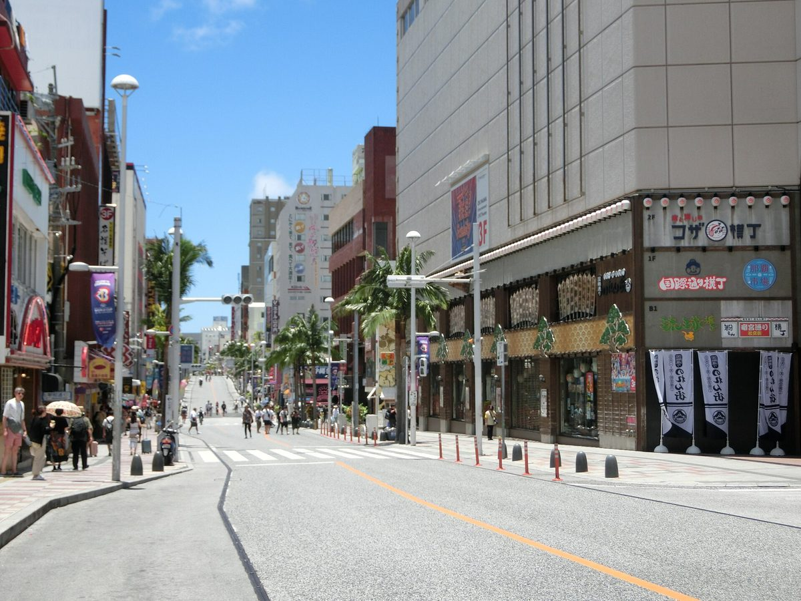

買東西這件事，沖繩跟你想的差不多——但有一件大事要先說：2026 年 11 月起，日本的免稅整個改制。先把這個搞懂，再來談去哪裡買。
想知道特定商品在哪裡買？用商品名稱查販售店 →。搜尋只涵蓋目前收錄的商品與店家；查不到不代表沖繩沒有販售。若想知道免稅方式或主要購物地點，直接看下面的說明即可。
2026-11-26 依日本觀光廳旅客用說明及 Q&A 確認。適用資格及細節以官方資訊為準。
現在是 9:00–翌 5:00（2026-06 官方確認）。深夜補貨還是沒問題，但別像以前一樣凌晨六七點殺過去。另外 2025 年 6 月起，國際通り上多了第二家「くもじ店」。
好市多的會員卡全球通用，台灣辦的卡在南城店直接刷進去。伴手禮要大量採購的話，這裡的單價很難被打敗。
新制要先付含稅價，請以店內標示的含稅金額估算刷卡額度和現金。買東西時先向免稅店確認退稅方式；海關確認攜帶商品出境後，才依店家的方式退款，別預先把還沒收到的退款算進旅費。
營業時間為 2026-06 確認值，出發前以各官方頁為準。若有特定商品，可再查找已收錄的販售店 →；庫存與價格請向店家確認。
免稅新制、哪裡買比較划算——之後可以直接敲我們（SNS 準備中）。先看看我們想做的事。